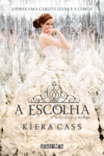

Kiera cass é uma escritora de New Adult muito conhecida pela serie de livros a seleção é por outras romances. Ela nasceu em 1981, na Carolina do Sul, EUA, e hoje mora em christiansburg com o marido e seus dois filhos. Seus livros no brasil são publicados pela editora companhia das letras pelo selo seguinte(criado para publicar literatura jovem).
Com seu enorme sucesso atualmente ja foram vendidos mais de 2 milhões de livros ao redor do mundo, tendo ate os direitos de seus livros comprados para gerar um filme.
Começando com o seu grande sucesso a seleção, que deu origem a esse universo de livros, segue a sinopse:
Muitas garotas sonham em ser princesas, mas este não é o caso de America Singer. Ela topa se inscrever na Seleção só para agradar a mãe, certa de que não será sorteada para participar da competição em que o príncipe escolherá sua futura esposa. Mas é claro que depois disso sua vida nunca mais será a mesma... Para trinta e cinco garotas, a Seleção é a chance de uma vida. É a oportunidade de ser alçada a um mundo de vestidos deslumbrantes e joias valiosas. De morar em um palácio, conquistar o coração do belo príncipe Maxon e um dia ser a rainha. America Singer, no entanto, estar entre as Selecionadas é um pesadelo. Significa deixar para trás o rapaz que ama. Abandonar sua família e seu lar para entrar em uma disputa ferrenha por uma coroa que ela não quer. E viver em um palácio sob a ameaça constante de ataques rebeldes. Então America conhece pessoalmente o príncipe - e percebe que a vida com que sempre sonhou talvez não seja nada comparada ao futuro que nunca tinha ousado imaginar.
Após 1 ano de publicação de a seleção sua aguardada sequencia chegou ao Brasil, pela mesma editora, segue a sinopse:
A vida no palácio não era tão ruim quanto America imaginava. Ou melhor: com todos os mimos e privilégios que estava tendo, ela já mal se lembrava de como era pertencer à casta Cinco. Ser Um, em compensação, era fácil: suas criadas eram costureiras talentosíssimas e faziam vestidos maravilhosos; os banquetes e as festas que frequentava eram incrivelmente divertidos; e o conforto em que vivia agora seria impensável alguns meses atrás. Além de tudo, quando sentia saudade de casa, tinha Aspen por perto. Ele era compreensivo, companheiro e tinha decidido colocar sua vida em perigo por ela - afinal, o que aconteceria se alguém descobrisse que, além de guarda do palácio, era ex-namorado de uma das candidatas? Era com Aspen que America contava nas horas mais difíceis. Por outro lado, o príncipe Maxon era atraente, bondoso, carinhoso e - o mais importante - desejava America mais do que qualquer outra garota da Elite. Mas, além de estar com o coração secretamente dividido, também era difícil lidar com o fato de que aceitar Maxon significava ter que aceitar uma coroa. America não tinha certeza se gostaria de ser uma princesa. Apesar da vida glamorosa, havia tantas coisas com as quais ela não concordava e que permaneciam sem explicação: por que o palácio sofria tantos ataques rebeldes? O que era reivindicado? Por que os castigos aos infratores tinham de ser tão violentos? O que estava por trás daquele regime de castas tão cruel? O tempo está acabando e as dúvidas de America só aumentam
Seguindo assim o mesmo que o anterio, o ultimo livro da triologia chegou finalmente ao Brasil, sendo possivel concluir a jornada da America, o Aspen e Maxon, segue a sinopse:
America era a candidata mais improvável da Seleção: se inscreveu por insistência da mãe e aceitou participar da competição só para se afastar de Aspen, um garoto que partira seu coração. Ao conhecer melhor o príncipe, porém, surgiu uma amizade que logo se transformou em algo mais... No entanto, toda vez que Maxon parecia estar certo de que escolheria America, algum obstáculo fazia os dois se afastarem. Um desses obstáculos era Aspen, que passou a ocupar o posto de guarda no palácio e estava decidido a reconquistar a namorada. Em encontros proibidos, ele a reconfortava em meio àquele mundo de luxos e rivalidades. Com essas idas e vindas, America perdeu um pouco de espaço no coração do príncipe, lugar que foi prontamente ocupado por outra concorrente. Para completar, o rei odiava America e a considerava a pior opção para o filho. Assim, tentava sabotar a relação dos dois, inventando mentiras e colocando a garota em prova a todo instante. Agora, para conseguir o que deseja, America precisa cortar os laços com Aspen, conquistar o povo de Illéa e conseguir novos aliados políticos. Mas tudo pode sair do controle quando ela começa a questionar o sistema de castas e a estratégia usada para lidar com os ataques rebeldes...